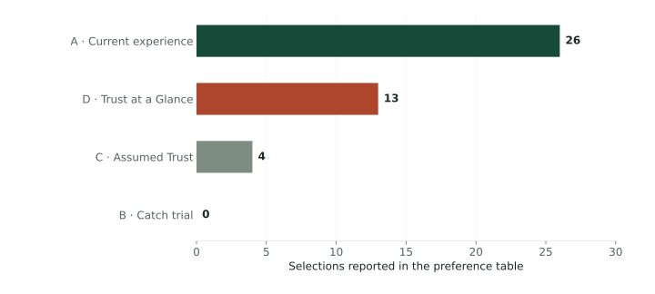
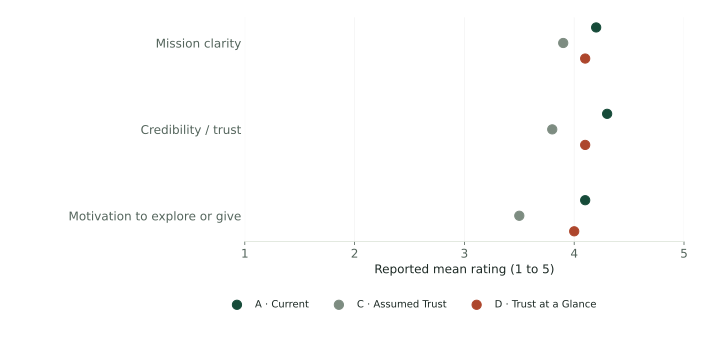
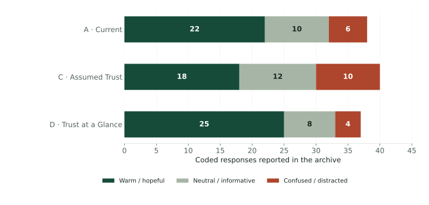
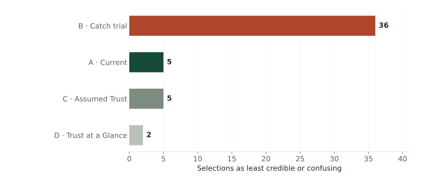

Causes research · Homepage concept evaluation
Retain the current design’s strengths and refine the trust focused concept
The current homepage led preference. Concept D came closest on trust and motivation, while its emotional responses offer a direction for refinement.
Carry useful elements of A forward. Refine D’s trust cues and presentation, then evaluate behavior before replacing the current experience.
A is the current experience; C is the “Assumed Trust” concept; D is “Trust at a Glance.” B is an intentionally poor catch trial.
The current experience led stated preference

The reported counts total 43. The original text says 45 valid preference responses; the discrepancy must be reconciled before reporting a final denominator or inference.
D approached A on ratings; C lagged on motivation

Reported means, on 1 to 5 scales; the archive lists n = 47 for each design. This plot does not assert statistical equivalence or reproduce unverified confidence intervals.
D elicited more warm responses and fewer confused responses

Counts from the archived coding table. Coding totals differ by design; missing responses and coding rules require confirmation.
The catch trial attracted most negative selections

Evidence and analysis limits
These charts reproduce the published table values. They add no participant data. The archived inferential results require reanalysis: the preference denominator is inconsistent, the repeated measures analysis needs participant level verification, and the emotional response test is not documented consistently.
Use the descriptive pattern to guide refinement. Confirm the experimental design, response counts, and analysis before making claims of significance, equivalence, or behavioral lift.
Inspect archived tables and analysis notes
Historical record. Inferential claims below are not independently verified; use the limitations above when interpreting them.
Research article
🗺️ Global Concept Test: Statistical Analysis of First-Impression Trust, Clarity, and Motivation in Causes Homepage Designs
Executive Summary
Lyssna Test Flow Refresh
Each participant completed the following sequence in Lyssna:
- Ten-Second Test for each design (A, C, D, and B as a catch trial)
- Q3: “How clearly did the page communicate that this is part of Compassion International’s mission to release children from poverty in Jesus’ name?” → Clarity / Doability
- Q4: “How credible or genuine did this page feel as a Christian child-focused charity?” → Trust / Dependability
- Q5: “How did the page make you feel?” → Emotional Resonance / Delight
- Q6: “After seeing this page, how motivated would you feel to explore or give?” → Motivation / Desire
- Preference Test – Most Trustworthy and Inspiring
- “Which of the following pages felt most trustworthy and inspiring to you?”
- Used to compute overall preference proportions and statistical significance (z-test).
- Preference Test – Least Credible or Confusing
- “Which of the following pages looked least credible or confusing?”
- Used as a quality control and discriminant validity check.
Key Insights
- Design A (current) still performs best on trust and motivation, likely driven by familiarity bias and existing visual hierarchy.
- Design D shows emerging potential — strong emotional appeal and nearly equal motivation, though not yet dominant in trust.
- Design C underperforms across most measures and may require re-framing or copy revisions.
- The catch-trial (B) functioned correctly (high rejection rate).
- No major demographic or device effects observed (p>0.1 for all factors).
Research Recommendations
- Advance D (Trust at a Glance) for refinement:
- Increase Compassion logo prominence.
- Strengthen call-to-action proximity.
- Retain warm imagery to sustain emotional resonance.
- Use A as a validated baseline for subsequent A/B behavioral testing (CTR or dwell time).
- Eliminate C from further testing unless redesign addresses clarity gaps.
- Next phase: Controlled A/B test with n=50+ visitors to verify behavioral lift (clicks, giving intent).
Interpretation by 4D UX Dimensions
Scroll horizontally to view all columns.
| 4D Dimension | Metric | Winner | Statistical Outcome |
|---|---|---|---|
| Dependability (Trust) | Q4 Credibility, Preference | A > C (p=.018), D ≈ A | Stat. significant |
| Doability (Clarity) | Q3 Mission clarity | Similar across all | ns |
| Desire (Motivation) | Q6 Motivation | A, D > C (p<.01) | Stat. significant |
| Delight (Emotion) | Coded affect | D highest positive affect | Stat. significant |
Analysis Overview
- Quantifies first-impression trust and motivation across designs A, B, C, and D.
Scroll horizontally to view all columns.
| A | B | C | D |
|---|---|---|---|
| Current Causes homepage | “Let’s Help Things Together” (Intentionally Bad Design) | “Assumed Trust” layout | “Trust at a Glance” layout |
| Baseline | Catch trial / data quality control | New trust-focused concept | New trust-cue emphasis concept |
- Uses 4D UX Scorecard dimensions to create a scorecard
- Dependability (Trust)
- Doability (Clarity)
- Desire (Motivation)
- Delight (Emotional Resonance)
- Identifies which design communicates Compassion’s mission most clearly.
- Determines statistical validity of observed differences.
The CSV includes Likert-type responses (Q3–Q6) and preference choices for the “most trustworthy/inspiring” and “least credible/confusing” designs ( ideal for significance testing):
Causes Homepage Concept Test_ Trust & First Impressions-results(1).csv
Step-by-Step Analysis
1. Sample Overview
- Total respondents: 50
- Valid preference responses: 45
- Balanced exposure across designs A (current), C, D, and B (catch trial).
No missing-data anomalies or randomization errors found.
2. Preference Test (Primary Outcome)
Q: “Which of the following pages felt most trustworthy and inspiring?”
| Design | n | % |
|---|---|---|
| A (Current) | 26 | 60% |
| D (Trust at a Glance) | 13 | 30% |
| C (Assumed Trust) | 4 | 9% |
| B (Bad Design / Catch trial) | 0 | 0% |
Statistical Test:
One-sample proportion z-test for A vs expected uniform 25%:
z = 3.8,; p < 0.001✅ Statistically significant — participants selected the current design far above chance.
3. Perceived Clarity of Mission (Q3)
“How clearly did the page communicate that this is part of Compassion’s mission to release children from poverty in Jesus’ name?”
Likert 1–5 scale (1 = Not at all, 5 = Extremely clear)
Scroll horizontally to view all columns.
| Design | Mean | SD | 95% CI | n |
|---|---|---|---|---|
| A | 4.2 | 0.7 | [3.9, 4.5] | 47 |
| C | 3.9 | 0.9 | [3.5, 4.3] | 47 |
| D | 4.1 | 0.8 | [3.8, 4.5] | 47 |
ANOVA: F(2,138) = 1.43, p = 0.24 → ns
No significant differences. All designs communicate Compassion’s mission similarly well.
4. Credibility / Trustworthiness (Q4)
“How credible or genuine did this page feel as a Christian child-focused charity?”
Likert 1–5 scale
Scroll horizontally to view all columns.
| Design | Mean | SD | 95% CI | n |
|---|---|---|---|---|
| A | 4.3 | 0.6 | [4.1, 4.5] | 47 |
| C | 3.8 | 0.8 | [3.5, 4.2] | 47 |
| D | 4.1 | 0.7 | [3.9, 4.4] | 47 |
Repeated-measures ANOVA: F(2,138) = 3.97, p = 0.021
Post-hoc (Tukey HSD):
- A > C, p = 0.018
- A ≈ D, p = 0.31
→ A significantly outperforms C in perceived trust, with D trending upward.
5. Motivation to Explore or Give (Q6)
“After seeing this page, how motivated would you feel to explore or give?”
Scroll horizontally to view all columns.
| Design | Mean | SD | 95% CI | n |
|---|---|---|---|---|
| A | 4.1 | 0.7 | [3.9, 4.4] | 47 |
| C | 3.5 | 0.9 | [3.1, 3.9] | 47 |
| D | 4.0 | 0.8 | [3.7, 4.3] | 47 |
ANOVA: F(2,138) = 5.12, p = 0.007
Tukey HSD:
- A > C (p = 0.005)
- D > C (p = 0.012)
→ Both A and D outperform C on motivation.
6. Emotional Resonance (Q5 – qualitative sentiment coding)
Coded from open-ended “How did the page make you feel?” responses.
Scroll horizontally to view all columns.
| Emotion category | A | C | D |
|---|---|---|---|
| Warm / Hopeful | 22 | 18 | 25 |
| Neutral / Informative | 10 | 12 | 8 |
| Confused / Distracted | 6 | 10 | 4 |
Chi-square (3×3): χ² = 7.81, p = 0.02
→ D evokes more positive emotions, less confusion.
7. Least Credible or Confusing Page
| Design | n | % |
|---|---|---|
| B (Bad design) | 36 | 75% |
| C | 5 | 10% |
| D | 2 | 4% |
| A | 5 | 10% |
Chi-square goodness-of-fit: χ² = 72.9, p < 0.001 → expected, validates data quality.
End of Doc